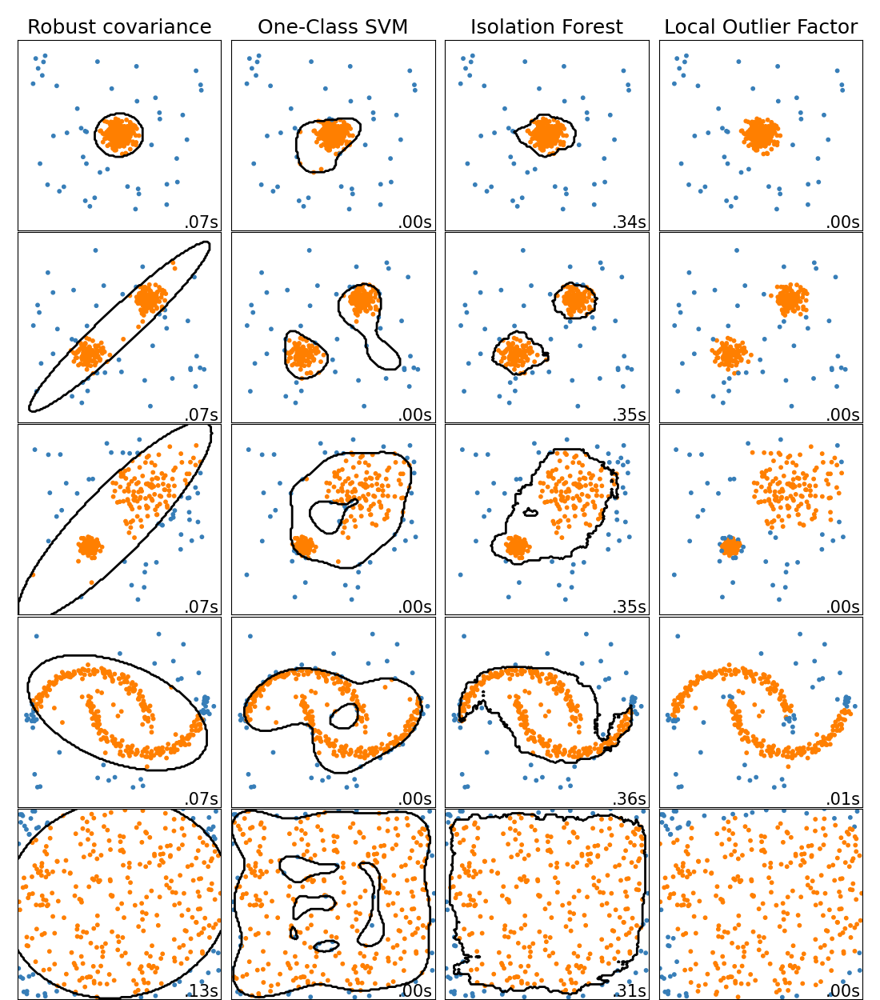

Nota
Haz clic aquí para descargar el código completo del ejemplo o para ejecutar este ejemplo en tu navegador a través de Binder
Comparación de algoritmos de detección de valores atípicos en conjuntos de datos de juguete¶
Este ejemplo muestra las características de diferentes algoritmos de detección de anomalías en conjuntos de datos 2D. Los conjuntos de datos contienen uno o dos modos (regiones de alta densidad) para ilustrar la capacidad de los algoritmos para hacer frente a los datos multimodales.
Para cada conjunto de datos, el 15% de las muestras se generan como ruido uniforme aleatorio. Esta proporción es el valor dado al parámetro nu del OneClassSVM y al parámetro de contaminación de los demás algoritmos de detección de valores atípicos. Los límites de decisión entre los valores típicos y los valores atípicos se muestran en negro, excepto en el caso de Local Outlier Factor (LOF), ya que no tiene un método de predicción que se aplique a los nuevos datos cuando se utiliza para la detección de valores atípicos.
Se sabe que OneClassSVM es sensible a valores atípicos y, por tanto, no funciona muy bien para la detección de valores atípicos. Este estimador es más adecuado para la detección de novedades cuando el conjunto de entrenamiento no está contaminado por valores atípicos. Dicho esto, la detección de valores atípicos en alta dimensión, o sin ninguna suposición sobre la distribución de los datos subyacentes es muy difícil, y un SVM de una clase podría dar resultados útiles en estas situaciones dependiendo del valor de sus hiperparámetros.
EllipticEnvelope asume que los datos son Gaussianos y aprende una elipse. Por tanto, se degrada cuando los datos no son unimodales. Sin embargo, este estimador es robusto a los valores atípicos.
IsolationForest y LocalOutlierFactor parecen funcionar razonablemente bien para conjuntos de datos multimodales. La ventaja de LocalOutlierFactor sobre los otros estimadores se muestra para el tercer conjunto de datos, donde las dos modas tienen densidades diferentes. Esta ventaja se explica por el aspecto local de LOF, que significa que sólo compara la puntuación de anormalidad de una muestra con las puntuaciones de sus vecinas.
Finalmente, para el último conjunto de datos, es difícil decir que una muestra es más anormal que otra, ya que están distribuidas uniformemente en un hipercubo. Salvo el OneClassSVM que sobreajusta un poco, todos los estimadores presentan soluciones decentes para esta situación. En este caso, sería prudente observar más de cerca las puntuaciones de anormalidad de las muestras, ya que un buen estimador debería asignar puntuaciones similares a todas las muestras.
Si bien estos ejemplos permiten intuir los algoritmos, esta intuición podría no aplicarse a datos de dimensiones muy altas.
Por último, ten en cuenta que los parámetros de los modelos aquí se han elegido a mano, pero que en la práctica hay que ajustarlos. En ausencia de datos etiquetados, el problema es completamente no supervisado, por lo que la selección de modelos puede ser un reto.
# Author: Alexandre Gramfort <alexandre.gramfort@inria.fr>
# Albert Thomas <albert.thomas@telecom-paristech.fr>
# License: BSD 3 clause
import time
import numpy as np
import matplotlib
import matplotlib.pyplot as plt
from sklearn import svm
from sklearn.datasets import make_moons, make_blobs
from sklearn.covariance import EllipticEnvelope
from sklearn.ensemble import IsolationForest
from sklearn.neighbors import LocalOutlierFactor
print(__doc__)
matplotlib.rcParams['contour.negative_linestyle'] = 'solid'
# Example settings
n_samples = 300
outliers_fraction = 0.15
n_outliers = int(outliers_fraction * n_samples)
n_inliers = n_samples - n_outliers
# define outlier/anomaly detection methods to be compared
anomaly_algorithms = [
("Robust covariance", EllipticEnvelope(contamination=outliers_fraction)),
("One-Class SVM", svm.OneClassSVM(nu=outliers_fraction, kernel="rbf",
gamma=0.1)),
("Isolation Forest", IsolationForest(contamination=outliers_fraction,
random_state=42)),
("Local Outlier Factor", LocalOutlierFactor(
n_neighbors=35, contamination=outliers_fraction))]
# Define datasets
blobs_params = dict(random_state=0, n_samples=n_inliers, n_features=2)
datasets = [
make_blobs(centers=[[0, 0], [0, 0]], cluster_std=0.5,
**blobs_params)[0],
make_blobs(centers=[[2, 2], [-2, -2]], cluster_std=[0.5, 0.5],
**blobs_params)[0],
make_blobs(centers=[[2, 2], [-2, -2]], cluster_std=[1.5, .3],
**blobs_params)[0],
4. * (make_moons(n_samples=n_samples, noise=.05, random_state=0)[0] -
np.array([0.5, 0.25])),
14. * (np.random.RandomState(42).rand(n_samples, 2) - 0.5)]
# Compare given classifiers under given settings
xx, yy = np.meshgrid(np.linspace(-7, 7, 150),
np.linspace(-7, 7, 150))
plt.figure(figsize=(len(anomaly_algorithms) * 2 + 3, 12.5))
plt.subplots_adjust(left=.02, right=.98, bottom=.001, top=.96, wspace=.05,
hspace=.01)
plot_num = 1
rng = np.random.RandomState(42)
for i_dataset, X in enumerate(datasets):
# Add outliers
X = np.concatenate([X, rng.uniform(low=-6, high=6,
size=(n_outliers, 2))], axis=0)
for name, algorithm in anomaly_algorithms:
t0 = time.time()
algorithm.fit(X)
t1 = time.time()
plt.subplot(len(datasets), len(anomaly_algorithms), plot_num)
if i_dataset == 0:
plt.title(name, size=18)
# fit the data and tag outliers
if name == "Local Outlier Factor":
y_pred = algorithm.fit_predict(X)
else:
y_pred = algorithm.fit(X).predict(X)
# plot the levels lines and the points
if name != "Local Outlier Factor": # LOF does not implement predict
Z = algorithm.predict(np.c_[xx.ravel(), yy.ravel()])
Z = Z.reshape(xx.shape)
plt.contour(xx, yy, Z, levels=[0], linewidths=2, colors='black')
colors = np.array(['#377eb8', '#ff7f00'])
plt.scatter(X[:, 0], X[:, 1], s=10, color=colors[(y_pred + 1) // 2])
plt.xlim(-7, 7)
plt.ylim(-7, 7)
plt.xticks(())
plt.yticks(())
plt.text(.99, .01, ('%.2fs' % (t1 - t0)).lstrip('0'),
transform=plt.gca().transAxes, size=15,
horizontalalignment='right')
plot_num += 1
plt.show()
Tiempo total de ejecución del script: (0 minutos 9.339 segundos)
:download:``Descargar el cuaderno de Jupyter: plot_anomaly_comparison.ipynb <plot_anomaly_comparison.ipynb>`